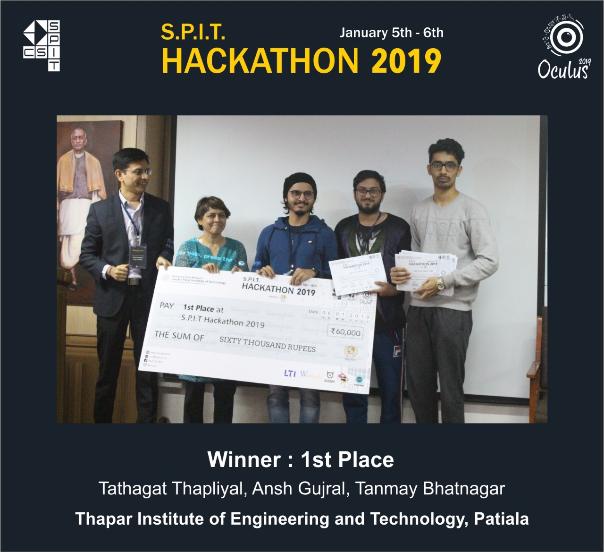

Hackathon 1st,2nd Feb

Following tradition, CSI-SPIT is back with the annual "SPIT Hackathon 2020".
This year it will be held in accordance with the official techno-cultural fest of SPIT - Oculus 2020.
We invite all innovators and techno geeks to come and get their creativity going.
With a great team and skilled panel of judges, this hackathon will be an ideal platform to put your knowledge to use and network with your peers.
Team Size : 2-4 Members
Domains : Will be declared soon!